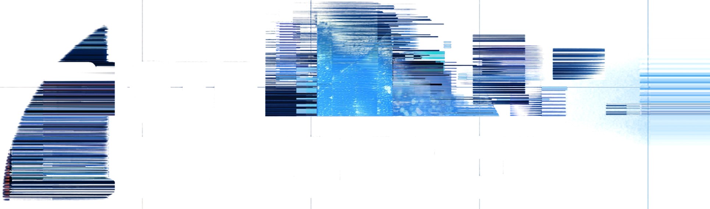

We ask you not to share on social media channel any posts or hashtags related to our brands, products, event, and other promotion or campaign.
By tapping OK, you agree that your photo may be captured and used as part of the Photo NRG experience, and may be displayed on event screens and selected promotional materials for IQOS, BONDS, VEEV, and ZYN during the event.
Dengan mengetuk OK, Anda setuju bahwa foto Anda dapat diambil dan digunakan sebagai bagian dari pengalaman Photo NRG, serta dapat ditampilkan di layar acara dan materi promosi tertentu untuk IQOS, BONDS, VEEV, dan ZYN selama acara ini.
One unique creation.
Make every frame your own.
SCAN QR TO DOWNLOAD
Perubahan tersimpan di perangkat ini.
Pilih webcam yang dipakai. Kalau kosong, izinkan akses kamera dulu lalu buka panel ini lagi.
Ruangan di belakang pengunjung diganti backdrop biru polos, efek diterapkan ke orangnya saja. Butuh internet saat aplikasi dibuka.
Foto hasil ikut di-mirror sama seperti yang dilihat pengunjung.
POST multipart: name, phone, file (foto 9:16). Response JSON wajib punya field "file" (URL publik) → jadi isi QR.
Header Authorization ke API upload (format client_id:secret).
Dipakai kalau upload gagal / offline. ID sesi ditambahkan di akhir (#ID).
Isi 0 untuk mematikan reset otomatis.
Pakai ini kalau TV dipasang berdiri tapi tampilannya masih landscape.